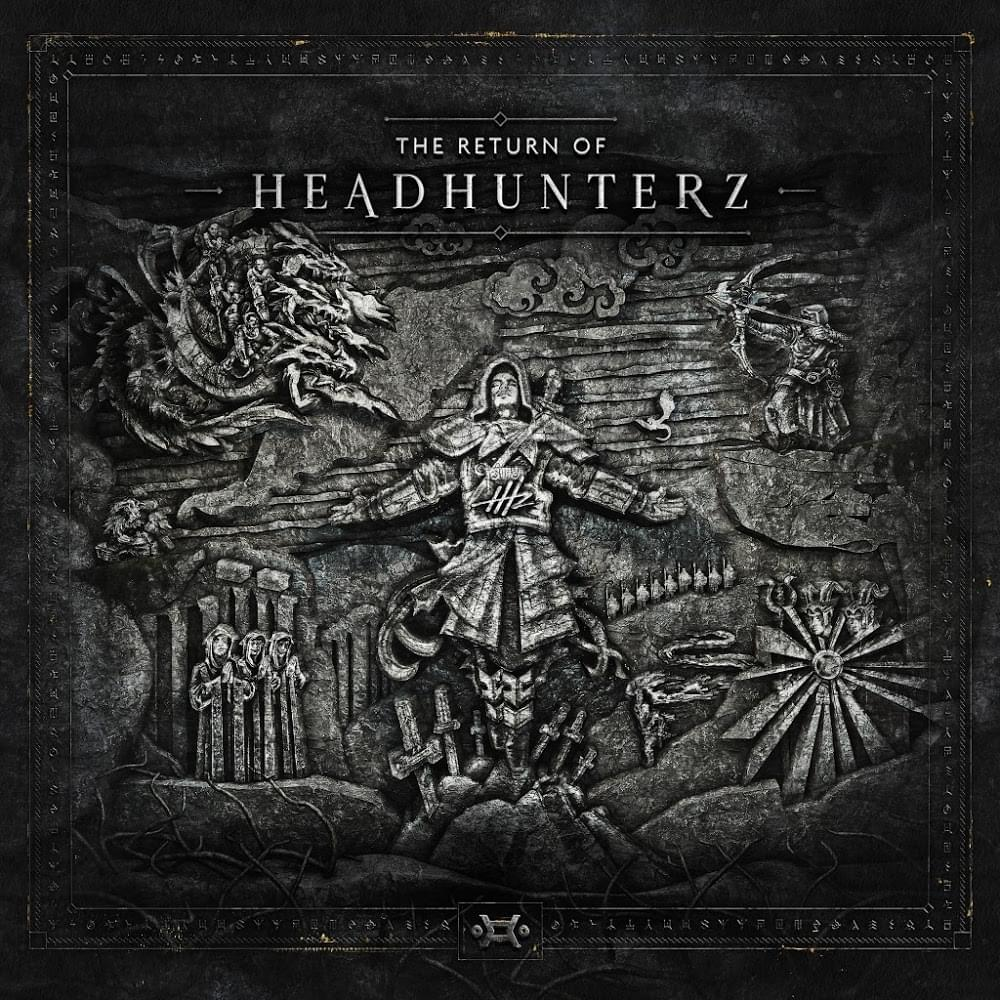

POSTER


Voor de poster opdracht heb ik gekozen voor een soort middeleeuws design. Mijn inspiratie komt van de albumcover van 'The Return of Headhunterz'
Deze cover heeft ook zo'n middeleeuws karakter.
Hierna ben ik begonnen met het maken van de poster. Eerst heb ik in de greenroom foto's gemaakt. Deze heb ik in photoshop bewerkt tot de foto op de poster met een transparante achtergrond. Verder heb ik verschillende plaatjes van internet gedownload: De kerk, de bergen op de achtergrond en het zwaard. De achtergrond is een plaatje van een oud stuk papier met een gele toon. Om het 'getekende' effect te geven aan het plaatje heb ik op alle layers (behalve de achtergrond) een grafisch filter gezet. De overvloei modus staat op liniear overvloeien. Dit geeft alle voorwerpen op de poster het getekende effect.
Hierna ben ik begonnen met het maken van de poster. Eerst heb ik in de greenroom foto's gemaakt. Deze heb ik in photoshop bewerkt tot de foto op de poster met een transparante achtergrond. Verder heb ik verschillende plaatjes van internet gedownload: De kerk, de bergen op de achtergrond en het zwaard. De achtergrond is een plaatje van een oud stuk papier met een gele toon. Om het 'getekende' effect te geven aan het plaatje heb ik op alle layers (behalve de achtergrond) een grafisch filter gezet. De overvloei modus staat op liniear overvloeien. Dit geeft alle voorwerpen op de poster het getekende effect.